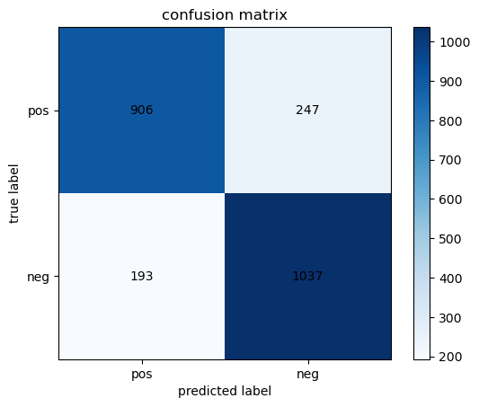

Background
Naive Bayes is a classifier based on Bayes’ rule. It estimates the probability that a review belongs to a class, given the words in the review. Here the classes are positive and negative sentiment.
The “naive” assumption is that the words occur independently given the class. The model uses how common each class is and how often each word appears in that class. It ignores word order.
Method
The dataset is shuffled and contains one review per line. Each line has a topic, sentiment label, document id, and review words. The first 80% of the reviews are used for training and the remaining 20% for testing.
During training, the code counts the reviews in each class and the occurrences of each word in each class. Add-one smoothing adds one to each word count so that a word not seen during training still receives a probability.
For each test review, the code adds the log of the class probability to the log probabilities of its words:
Log probabilities let the model add many small values instead of multiplying probabilities that can become too small for normal computer precision. The classifier predicts the class with the higher score.
Results
Test accuracy: 81.54%
Positive-class F1: 80.46%

The rows show the true labels, and the columns show the predicted labels.
Discussion
The classifier achieved a test accuracy of 81.54% and a positive-class F1 score of 80.46%. The confusion matrix shows 247 positive reviews predicted as negative and 193 negative reviews predicted as positive, so the two types of errors are fairly close in number.
The high-confidence error shown in the notebook is a negative review of a Kodak camera that the classifier predicted as positive with probability 1.000 after rounding. The review contains positive comments about the wide-angle lens and start-up time, along with many negative comments about image quality, battery life, and the menu system. Since the model treats words independently and does not capture how phrases and opinions relate, it can overemphasize positive words and miss the review’s overall negative assessment.